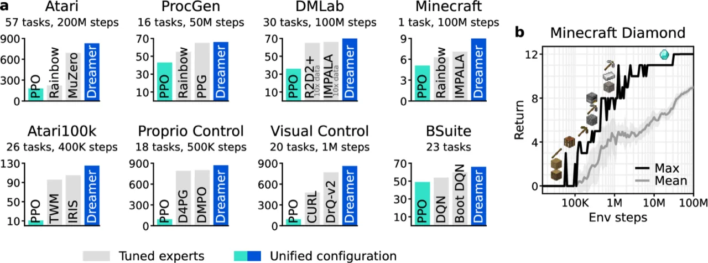
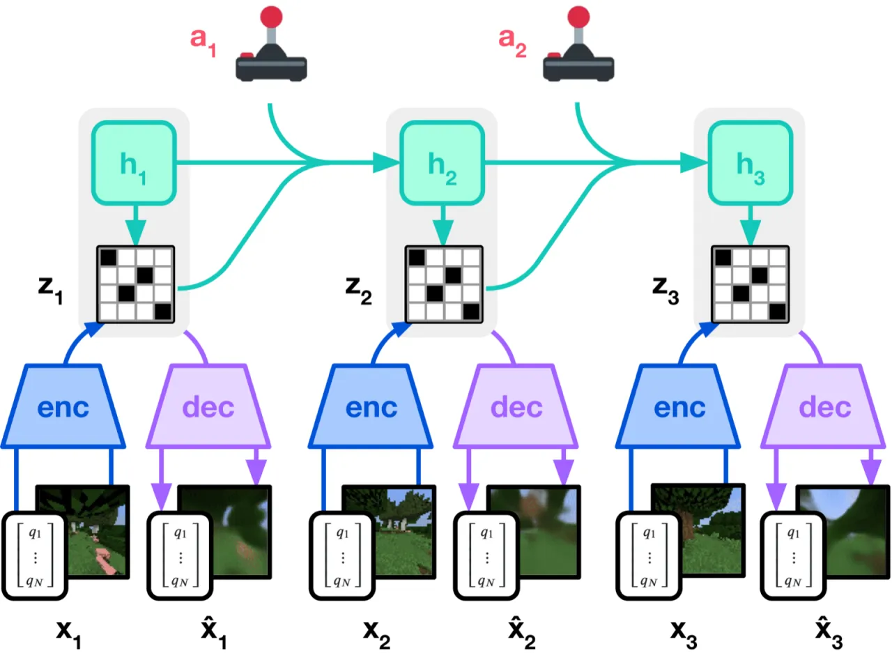
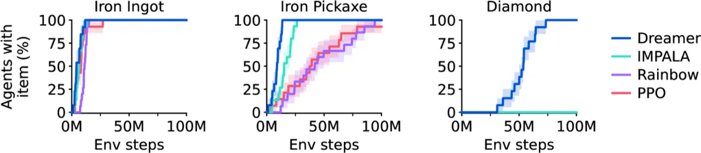
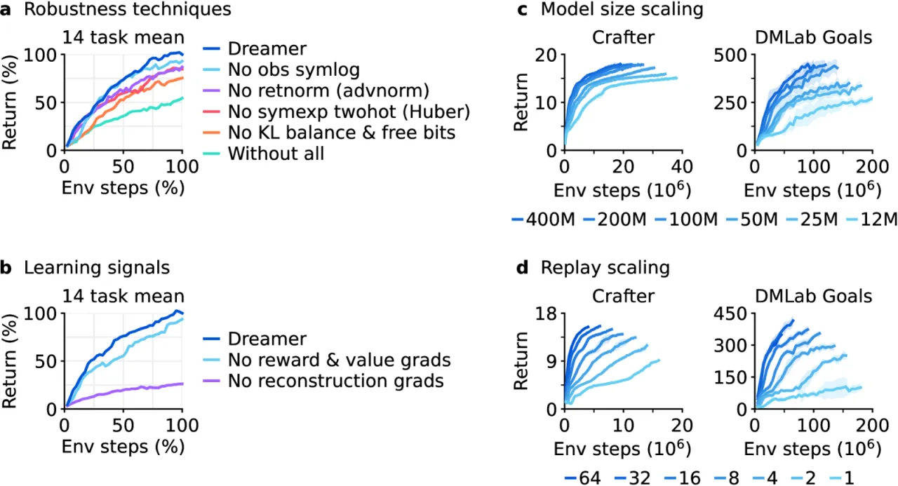

DreamerV3 是首个用单一固定超参数配置在 150+ 个不同领域任务上全面超越专用调参算法的通用强化学习方法。通过学习一个紧凑的世界模型，在想象空间中训练 actor-critic，并引入 symlog 压缩与收益归一化等鲁棒性技术，DreamerV3 实现了跨域泛化——并成为首个从零（无人类数据）在 Minecraft 中收集到钻石的算法。
强化学习已在围棋、电子游戏等单一领域取得突破，但每换一个新任务就需要重新调参——这严重限制了 RL 的实用价值。作者提出的核心问题是：
"Developing a general algorithm that learns to solve tasks across a wide range of applications has been a fundamental challenge in artificial intelligence."
现有专用算法（MuZero、PPG、IMPALA 等）在各自领域表现优异，却无法直接迁移：不同任务的奖励量纲、观测模态（图像/本体感知/向量）、回报范围差异极大，导致相同的损失函数和归一化假设在跨域时崩溃。DreamerV3 的目标是用一套固定超参数覆盖连续控制、离散游戏、3D 导航、开放世界等所有场景。

DreamerV3 由三个模块组成：世界模型（World Model）将真实轨迹压缩为紧凑表征；Actor 在想象轨迹中学习策略；Critic 估计状态价值。三者联合训练，但 actor 与 critic 仅在想象空间更新，大幅提升样本效率。

世界模型基于 Recurrent State Space Model (RSSM)，包含以下组件：
世界模型损失：L(φ) = β_pred · L_pred + β_dyn · L_dyn + β_rep · L_rep，权重分别为 1、1、0.1。动态损失和表征损失均通过 KL 散度（free bits 剪裁至 1 nat）相互约束，让序列模型与编码器共同进步。
跨域适用性的核心在于对不同量纲目标的统一处理：
symlog(x) = sign(x) · ln(|x|+1)，对大正负值对称压缩，用于重建损失和 critic 目标；避免了截断大目标、引入非平稳性等替代方案的缺陷。DreamerV3 在 7 大基准、150+ 任务上用同一套固定超参数进行评测，对比方法包括各基准的专用 SOTA 算法及高质量 PPO 实现。所有实验均在单张 A100 GPU 上完成。
| 基准 | 数据量 | 主要对比方法 | 结果 |
|---|---|---|---|
| Atari 57（200M frames） | 200M 帧 | MuZero, Rainbow, IQN | 超越 MuZero（使用更少算力） |
| Atari 100k（26 games, 400K frames） | 400K 帧 | IRIS, TWM, SPR, SimPLe | 超越所有方法（EfficientZero 用重置不公平） |
| ProcGen（16 games, 50M frames） | 50M 帧 | PPG（调参专用）, Rainbow | 匹敌调参 PPG，超越 Rainbow |
| DMLab（30 tasks, 100M frames） | 100M 帧 | IMPALA, R2D2+（1B 步） | 数据效率提升超过 1000% |
| 本体感知控制（18 tasks, 500K steps） | 500K 步 | D4PG, DMPO, MPO | 新 SOTA |
| 视觉控制（20 tasks, 1M steps） | 1M 步 | DrQ-v2, CURL | 新 SOTA |
| BSuite（468 configurations） | — | Boot DQN | 新 SOTA |


消融实验表明："The performance of Dreamer predominantly rests on the unsupervised reconstruction loss of its world model, unlike most prior algorithms that rely predominantly on reward and value prediction gradients." 其中 KL 目标（世界模型动态损失与表征损失）是最关键的学习信号；收益归一化和 symexp twohot 损失次之。
Minecraft 实验需要单张 A100 GPU 训练 9 天。尽管与 VPT 的 720 GPU × 9 天相比已大幅降低，但对于普通研究者仍是不小的成本。模型规模从 12M 到 400M 参数的实验也需要相应算力支撑。
论文声称"固定超参数"跨域使用，但这套超参数本身是在广泛实验后选定的。作者在附录中指出，某些超参数（如折扣因子 γ = 0.997）在一些任务上并非最优，只是在所有任务上"足够好"。
DreamerV3 在两种动作空间均有评测，但 actor 的梯度估计方式不同（连续用重参数化，离散用 straight-through estimator），可能在某些任务上引入额外方差。论文未针对这一差异做专项分析。
RSSM 的离散表征（32×32 one-hot）和固定预测 horizon（T=16 步）在极长时序依赖或高度随机环境中可能成为瓶颈。论文在 DMLab（需要空间+时序推理）上已体现出世界模型的优势，但更长期规划的场景未被深入分析。